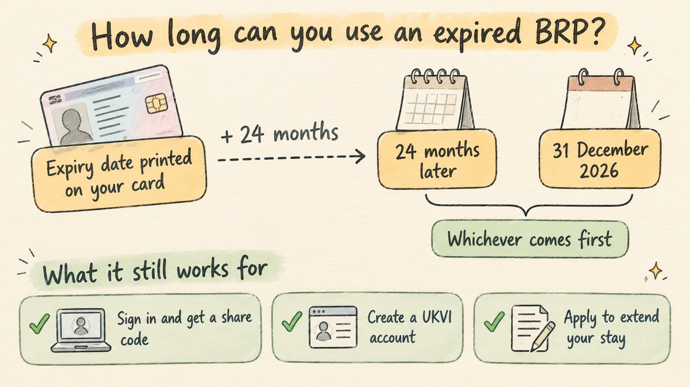

Expired BRP? Set Up Your UKVI Account Before the Deadline
Travel Document Vault
Key Takeaways
- Most people with an expired BRP only need to create a UKVI account, and the card can still help you do it for a while.
- GOV.UK says you might be able to use it for 24 months after the printed expiry date, or until 31 December 2026, whichever comes first.
- No usable card? A valid passport plus your visa application number or BRP number also gets you in.
- Each child needs their own account, which a parent can run with their own phone and email.
- To travel, the passport you fly on has to be on your UKVI account, with details that match your booking.
Most people holding an expired Biometric Residence Permit only need to do one thing: create a UK Visas and Immigration (UKVI) account, using the card to prove who they are. It's a single sitting, and the expired card still works for that, at least for a while. Your immigration status hasn't changed. What has changed is where it lives.
GOV.UK says all BRPs have now expired and have been replaced by eVisas. An eVisa is a digital record of your identity and immigration status, and you reach it through a UKVI account rather than carrying it in your wallet. That's why the account is the step that matters, for you and for everyone in your family who held a card.
An expired card doesn't mean your permission to stay has ended. GOV.UK's instructions are written for exactly this case: people whose BRP has expired but who still have permission to stay in the UK.
The 24-Month Limit on Your Card May Arrive Before 31 December 2026
GOV.UK's wording is careful. You might be able to use your expired BRP for 24 months after the expiry date printed on the card, or until 31 December 2026, whichever comes first. That "might" is the Home Office's hedge, not ours, and it's a good reason not to leave this to the final week.

Plenty of people hear the December date and stop there. The printed date is the one that catches families out. Take the expiry date on your card and add 24 months: if that lands before 31 December 2026, it's your real cut-off, and it may be closer than you think.
We'd set up every family member's account this week, starting with whoever holds the card with the oldest printed expiry date, since that's the one likely to run out first. Before you sit down, gather three things for each person: their card (or a valid passport and a reference number), a phone number and email address for the account, and the passport they'll travel on next. For a child, the phone and email can be yours. With those to hand, you can work through the family one account at a time.
An Expired BRP Is Good for Three Things Only
GOV.UK lists exactly what the card can still do. You can use it to sign in to view your eVisa and get a share code, to create a UKVI account so you can reach your eVisa, or to apply to extend your permission to stay in the UK. None of those uses is about crossing a border.
The third use is easy to overlook. If your permission to stay is coming up for extension, the expired card can still play a part in that application while its window is open, which is one more reason to know your date. For travel, GOV.UK points to your eVisa and the passport linked to it, which we come to below.
Once you're in, the account is how you prove your status day to day. GOV.UK says you can view your eVisa and get a share code to prove your immigration status, for example when you get a new job or rent a home. The eVisa also shows the conditions of your status, such as whether you can work or study. It's worth a look even if you have no trip planned.
A Passport and a Reference Number Also Open a UKVI Account
If your card has gone missing, or its 24 months have already run out, you aren't stuck. GOV.UK accepts two other combinations when you create an account: a valid passport plus your visa application number, or a valid passport plus your BRP number. The BRP number is printed on the card itself, so we'd note it down somewhere safe while you still have the card in hand.
If you have neither a valid passport nor an expired BRP, GOV.UK says you can confirm your identity another way. The page doesn't set out the steps and points you to UK Visas and Immigration's webchat, so that's the place to start.
A Lost Expired BRP Still Has to Be Reported
It feels odd to report a card that no longer works, but GOV.UK says you must report a lost or stolen BRP even though it has expired. Not reporting it can lead to a fine of up to £1,000 and being made to leave the UK, so it's worth the few minutes it takes.
Every Child Needs a UKVI Account of Their Own
GOV.UK says dependants need their own UKVI accounts to reach their eVisas, so a parent's account doesn't cover the whole family. Each child's account is set up separately. A parent can, though, create and manage a child's account using the parent's own phone number and email address, which keeps everything in one pair of hands.
When your child turns 18, the account details should move over to their own phone and email. It's a small job and easy to forget. We'd note it next to their passport's expiry date, where you'll see it again.
Travel Document Vault keeps each passport with its expiry date, and family members can each have their own profile with Pro. You can also save a note of your UKVI details or a share-code screenshot as a visa or other document with its own expiry date, so a reminder arrives before it lapses. Download on the App Store and Google Play.
To Travel, the Passport You Fly On Must Be on Your UKVI Account
GOV.UK is direct about this: you must travel with a valid passport or travel document that you've added to your UKVI account. Your eVisa is checked when you leave the UK, when you come back (including at eGates) and by the airline or other carrier at check-in. Those checks look at your eVisa through the passport on your account. If the details on your account don't exactly match the passenger information you gave the carrier, the carrier may not let you travel, and you may also be held up at the UK border.
Before a trip, sign in, confirm the passport on the account is the one you'll travel with, and get a share code. A code lasts 90 days and can be used more than once, and an airline or border officer may ask to see it. We'd get it before booking, not in the queue at the airport.
If you hold two nationalities, think about which passport you'll actually book with. If one of them is British or Irish, GOV.UK says you don't need an eVisa at all and travel on that passport instead. A UKVI account can hold more than one passport, but the one on your booking is the one that has to be there. Frequent travellers who switch between passports for different trips should add both, then check the account before each booking rather than once a year.
A Renewed Passport Has to Be Added Before You Travel on It
If you've renewed your passport, the new one needs to go on your account before you fly with it, and GOV.UK says you can update the passport number and expiry date on your account yourself. With a biometric passport you can also update your name and nationality yourself; anything else needs UK Visas and Immigration to make the change for you. If renewal is still ahead of you, our guide to renewing your passport before it expires covers when to start, and the new passport goes straight onto your account once it arrives.
Frequently Asked Questions
Do I need a UKVI account if my BRP has expired?
Yes, if you still have permission to stay in the UK. GOV.UK says you need to create a UKVI account to get access to your eVisa, which has replaced the BRP. You might be able to use your expired card to create it for 24 months after its printed expiry date, or until 31 December 2026, whichever comes first.
What can I still use an expired BRP for?
Three things, according to GOV.UK: signing in to view your eVisa and get a share code, creating a UKVI account, and applying to extend your permission to stay in the UK.
Can I create a UKVI account without my BRP?
Yes, GOV.UK also accepts a valid passport plus your visa application number, or a valid passport plus your BRP number. If you have neither a valid passport nor an expired BRP, it says you can confirm your identity another way and points to UK Visas and Immigration's webchat.
Do my children need their own UKVI accounts?
Each child needs their own UKVI account to reach their eVisa, according to GOV.UK, so a parent's account doesn't cover the whole family. A parent can set up and manage a child's account using the parent's own phone number and email address, and the details should be updated to the child's own when they turn 18.
What do I need to travel with an eVisa?
A valid passport that you've added to your UKVI account, with details that exactly match what you give the airline. Your eVisa is checked when you leave the UK, when you return including at eGates, and at carrier check-in. A share code lasts 90 days and can be used more than once.